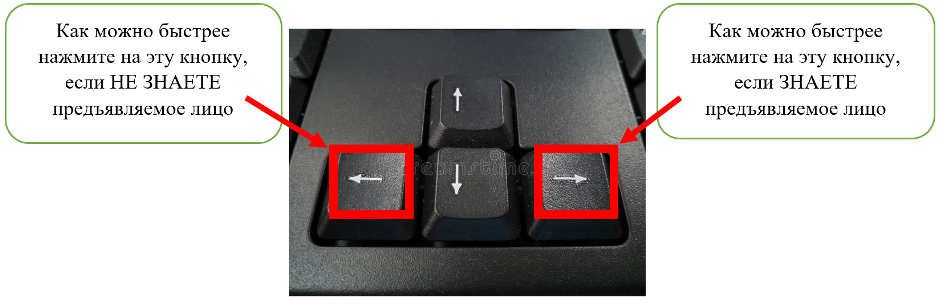

Инструкции
Здравствуйте, уважаемый респондент. Вам поочередно будут предъявляться серии фотографий среди которых будут фотографии лиц различных людей.
Если лицо вам ЗНАКОМО (вы с этим человеком лично знакомы, или просто знаете кто это и чем занимается),
то как можно быстрее нажмите на клавиатуре кнопку, указывающую направо (→), а после нажатия назовите экспериментатору имя предъявляемого лица, если же лицо вам не знакомо,
то как можно быстрее нажмите на клавиатуре кнопку, указывающую налево (←). Затем нажмите кнопку ПРОБЕЛ для запуска следующей серии фотографий и следуйте вышеописанной инструкции
после предъявления каждого лица.

Перед тем как приступить к основному тестированию, попробуйте пройти тренировочную серию. После тренировочной серии у вас появится окошко, в которое нужно будет ввести номер,
который вам назвал экспериментатор (введите просто цифру, ничего дописывать рядом не нужно, пробелы ставить тоже не нужно).
Начать пробный тест